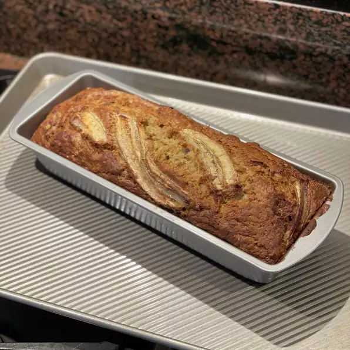

banana bread

It will cool and then be gone, so be prepared to double the recipe or make more. This is by far the best banana bread I have ever had. The banana bread is better if the bananas are extra ripe!
nutritional facts
Per Serving:
145 calories; protein 2.3g; carbohydrates 26.5g; fat 3.7g; cholesterol 30.9mg; sodium 181mg.
ingredients
- 1 1/2 cups all-purpose flour
- 1 teaspoon baking soda
- 1/2 teaspoon salt
- 1 cup white sugar
- 2 eggs, beaten
- 1/4 cup butter, melted
- 3 bananas, mashed
steps
- Preheat the oven to 350 degrees F (175 degrees C). Grease and flour two 7x3-inch loaf pans.
- In one bowl, whisk together flour, baking soda, salt, and sugar. Mix in slightly beaten eggs, melted butter, and mashed bananas. Stir in nuts if desired. Pour into the prepared pans.
- Bake in the preheated oven for 1 hour, or until a wooden toothpick inserted in the center comes out clean.